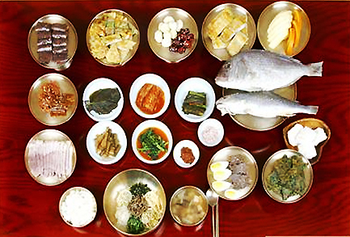

진주헛제사밥

조선시대 유생들이 밤늦게 공부를 하다가 밤참을 먹고 싶었으나 가난한 이웃이 마음에 걸려, 제사를 지내는 척하고 그 음식으로 허기를 채웠다는데서 유래한 해학적 풍류와 향토의 맛이 담겨 있는 진주의 전통음식이다.
일설에는 새로 부임한 경상관찰사가 진주의 제사 밥을 먹어 보고는 그 맛에 감탄하여 틈만 나면 제사밥을 찾게 되었는데, 하인들이 꾀를 내어 제사 밥 비슷하게 상을 차려 가져왔다고 한다. 그러나 향냄새가 배어있지 않아 들켰다는 이야기도 전해온다.
조상을 섬기는 음식처럼 정성들여 만들어내는 진주의 헛제사밥은 산해진미가 다 들어있으며, ‘헛제사밥명인’으로 지정된 진주의 이명덕씨에 의해 재현되고 있다.
일설에는 새로 부임한 경상관찰사가 진주의 제사 밥을 먹어 보고는 그 맛에 감탄하여 틈만 나면 제사밥을 찾게 되었는데, 하인들이 꾀를 내어 제사 밥 비슷하게 상을 차려 가져왔다고 한다. 그러나 향냄새가 배어있지 않아 들켰다는 이야기도 전해온다.
조상을 섬기는 음식처럼 정성들여 만들어내는 진주의 헛제사밥은 산해진미가 다 들어있으며, ‘헛제사밥명인’으로 지정된 진주의 이명덕씨에 의해 재현되고 있다.